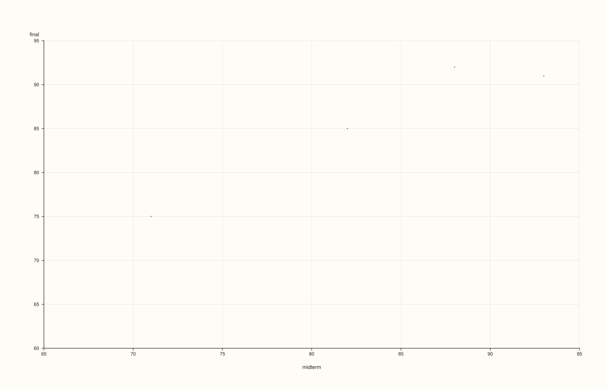
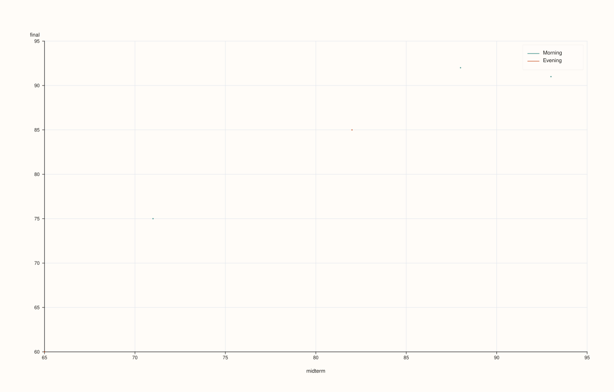
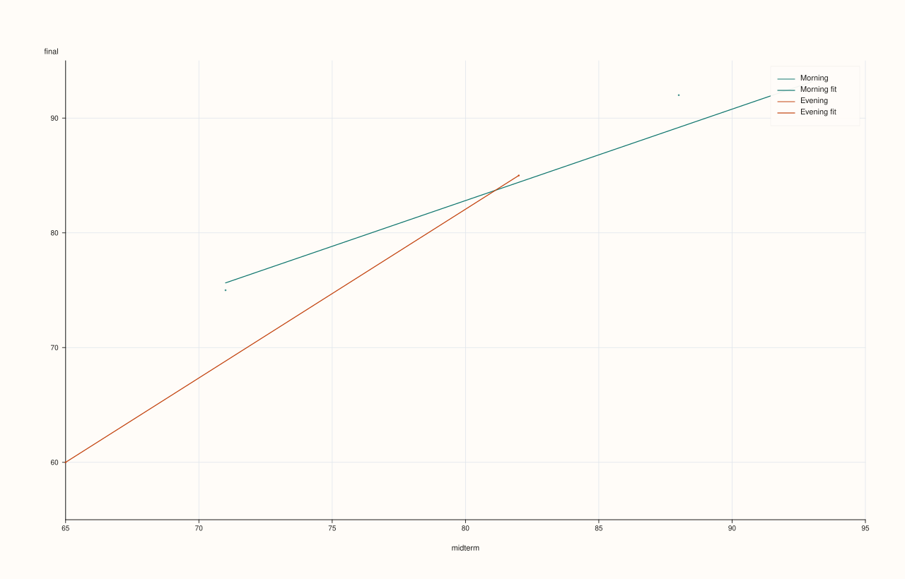
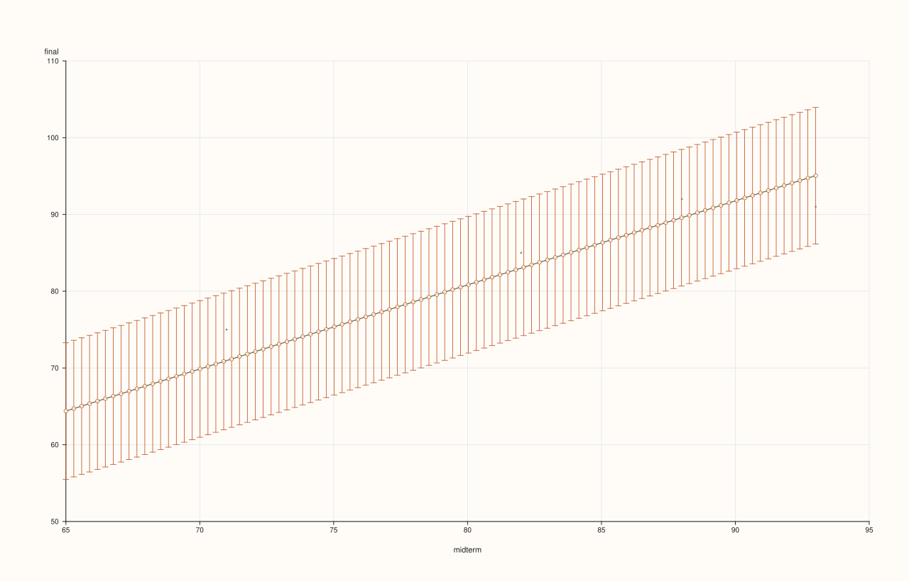

DataFramePlotAccessor::scatter¶
Back to DataFramePlotAccessor API Reference
Signatures¶
DataFramePlotAccessor::scatter(std::string_view x_feature,
std::string_view y_feature,
std::optional<std::string_view> hue_feature = std::nullopt) const -> pluss::pl::Studio
DataFramePlotAccessor::scatter(std::string_view x_feature,
std::string_view y_feature,
std::optional<std::string_view> hue_feature,
const ScatterPlotOptions& options) const -> pluss::pl::Studio
What It Does¶
Draws one point per row at (x_feature, y_feature), optionally split into separate,
distinctly colored/labeled point groups by a categorical hue_feature. Unlike
line()/step()/area()/bar(), scatter()
takes both x and y as required, plain (non-optional) arguments — there is no “fall back
to the frame’s row labels” behavior here, since a scatter plot needs two independent
numeric axes, not one axis plus a case index.
See line() for the Studio-return / no-cout mechanics shared by this whole
accessor.
Important
hue_feature has its own default-resolution and a stricter type requirement
hue_feature resolves the same way x_feature does elsewhere on this accessor: an
explicit argument wins, otherwise options.default_hue_feature (set via
df.plot(options)) is used if present, otherwise there’s no hue at all and every point is
drawn as one plain trace. Unlike andrews_curves()/parallel()/radviz()’s
class_feature (which accepts any feature and converts it to text), a resolved
hue_feature here must already be Note-, Timeline-, or TimeIndex-kind — a plain
numeric Series hue feature throws "DataFrame::plot().scatter: hue feature '<name>' must be note-like or time-like". If you want to color by a numeric value, bucket or cast it to
text first (e.g. with bucketize() or note()-family conversions).
Parameters¶
x_feature (std::string_view, required)
The feature for the horizontal axis. Always numeric-plotted (see require_plot_size
validation) — not resolved from default_x_feature the way other chart methods’
optional x_feature is.
y_feature (std::string_view, required)
The feature for the vertical axis.
hue_feature (std::optional<std::string_view>, default std::nullopt)
Optional categorical feature to split points into separate colored/labeled groups. See
the important callout above for its resolution and type requirements.
options (ScatterPlotOptions)
cpp struct ScatterPlotOptions { double alpha{0.92}; double line_width{1.1}; bool fit_line{false}; std::int64_t fit_order{1}; bool fit_ci{false}; double fit_confidence_level{0.95}; };
line_width here affects marker outline stroke width rather than a connecting line,
since scatter points aren’t connected. fit_line = true overlays a line of best fit
on top of the point cloud (or, with hue_feature, one color-matched fit line per hue
group) — see the important callout below and Examples 6–8. fit_order sets the
polynomial degree of that fit (1 for a straight line, the default; higher values fit
a curve). fit_ci = true additionally draws a shaded confidence band around the fit,
sized by fit_confidence_level. All four fit_* fields are ignored when fit_line
is false.
Returns¶
pluss::pl::Studio
A figure with one pane: a single point trace with no hue, or one point trace per
distinct hue value (each its own color, with a legend) when hue_feature resolves to
something.
Examples¶
Example 1. Plain scatter, no hue.
using namespace pluss::table;
auto students = DataFrame({
{"midterm", Slate(pluss::make_series({71.0, 82.0, 93.0, 65.0, 88.0}))},
{"final", Slate(pluss::make_series({75.0, 85.0, 91.0, 60.0, 92.0}))},
{"cohort", Slate(pluss::make_note({"Morning", "Evening", "Morning", "Evening", "Morning"}))},
});
auto chart = students.plot().scatter("midterm", "final");
chart.show();
Every row becomes one point at (midterm, final); no legend is shown since there’s no hue.

Example 2. With a categorical hue feature: points split into one trace per distinct cohort value, each its own color.
auto chart = students.plot().scatter("midterm", "final", "cohort");
chart.show();
Two traces are drawn — "Morning" and "Evening" — in the order those values first appear
in the data (row 0 is "Morning", so it becomes the first group; row 1 introduces
"Evening" as the second), not sorted alphabetically. A legend labeled with each
cohort value is shown automatically.

Example 3. A shared default_hue_feature, set once on the accessor and reused across
calls, mirroring line()’s default_x_feature pattern.
DataFramePlotOptions options;
options.default_hue_feature = "cohort";
auto plot = students.plot(options);
auto chart1 = plot.scatter("midterm", "final"); // hue defaults to "cohort"
auto chart2 = plot.scatter("midterm", "final", std::nullopt); // std::nullopt explicitly suppresses hue
chart1 picks up "cohort" from the accessor-level default without repeating it.
chart2 demonstrates that passing std::nullopt explicitly, rather than simply omitting
the argument, also resolves through default_hue_feature resolution the same way — to
truly force “no hue regardless of the accessor default,” a caller would need to build a
separate accessor without default_hue_feature set.
chart1 (hue defaults to "cohort"):

chart2 (std::nullopt explicitly, still resolves to "cohort"):

Example 4. The type-requirement throw: a purely numeric hue feature is rejected.
try {
auto bad = students.plot().scatter("midterm", "final", "final");
} catch (const std::exception& e) {
std::cout << e.what();
}
Output¶
DataFrame::plot().scatter: hue feature 'final' must be note-like or time-like
"final" is a plain numeric Series, not Note/Timeline/TimeIndex-kind, so it fails the
hue type check even though it’s a perfectly valid x_feature/y_feature.
Example 5. An explicit ScatterPlotOptions.
ScatterPlotOptions scatter_options;
scatter_options.alpha = 0.6;
scatter_options.line_width = 1.5;
auto chart = students.plot().scatter("midterm", "final", "cohort", scatter_options);
chart.show();

Important
fit_line overlays a line of best fit — one per hue group, if hue is set
ScatterPlotOptions::fit_line = true fits and draws a line of best fit (linear by
default; see fit_order) directly on top of the point cloud, without leaving this
accessor. With no hue_feature, one fit line is drawn through every point. With a
hue_feature, one separate fit line is drawn per hue group, each colored to match its
own group’s points — computed independently per group, not one shared fit across all
points regardless of hue. fit_ci = true additionally shades a confidence band around
each fit line, sized by fit_confidence_level. See Examples 6–8.
Example 6. fit_line = true, no hue: a single line of best fit through every point.
ScatterPlotOptions fit_options;
fit_options.fit_line = true;
auto chart = students.plot().scatter("midterm", "final", std::nullopt, fit_options);
chart.show();

Example 7. fit_line = true together with hue_feature: one fit line per hue group,
each color-matched to its own group’s points.
ScatterPlotOptions fit_options;
fit_options.fit_line = true;
auto chart = students.plot().scatter("midterm", "final", "cohort", fit_options);
chart.show();

The "Morning" group’s points and its fit line share one color; "Evening"’s points and
fit line share the other. Each fit is computed only from that group’s own points, not from
the combined data.
Example 8. fit_ci = true: a shaded confidence band around the fit.
ScatterPlotOptions fit_options;
fit_options.fit_line = true;
fit_options.fit_ci = true;
auto chart = students.plot().scatter("midterm", "final", std::nullopt, fit_options);
chart.show();

Note
Need more than fit_line offers? PlussPl’s flash::regplot has robust and LOWESS fits too
fit_line covers the common case — a polynomial least-squares fit, optionally with an
analytic confidence band. For robust regression, LOWESS smoothing, or a bootstrap
(rather than analytic) confidence interval, ScatterPlotOptions has no field for it —
reach for PlussPl’s pluss::pl::flash::regplot(pane, x, y, options) directly on a pane
you build yourself, passing each column’s values as a pluss::Series (obtained via
frame.features(name).value(), then assigned to an explicit pluss::Series variable, not
auto, since a Slate::value()’s SlateValue converts implicitly to several payload
types and auto would leave the conversion target ambiguous). See Example 9.
Example 9. Reaching past fit_line for PlussPl’s flash::regplot directly, when a
fit shape ScatterPlotOptions doesn’t expose is needed.
#include "pluss/pl/flash/flash.h"
pluss::Series midterm_series = students.features("midterm").value();
pluss::Series final_series = students.features("final").value();
auto fig = pluss::pl::studio("scores_fit");
auto& pane = fig.pane2();
pane.x_label("midterm").y_label("final");
pluss::pl::flash::regplot(pane, midterm_series, final_series);
fig.show();

regplot draws the scatter cloud itself (equivalent to scatter()’s points) and then a
linear fit (RegPlotOptions::order = 1 by default) through them on the same pane, as two
separate traces — this is exactly what fit_line = true does internally (see Example 6).
The difference is RegPlotOptions’s extra fields fit_line doesn’t expose: robust,
lowess, and bootstrap-based show_ci (via n_boot) — see PlussPl’s own reference for
the full struct. flash::lmplot(studio, x, y, options, title) is the equivalent one-liner
when you don’t need to touch the pane yourself first.
Notes¶
x_feature/y_featureare required, non-optional arguments — there is no row-label fallback the wayline()/bar()/etc. have for a single axis.hue_featureresolves throughoptions.default_hue_featurethe same wayx_featureresolves throughdefault_x_featureelsewhere, but a resolved hue feature must be Note-, Timeline-, or TimeIndex-kind or the call throws — see the important callout above.Hue groups are ordered by first appearance in the data, not sorted.
fit_line = truefits and draws a line of best fit directly on top of the point cloud — one per hue group whenhue_featureis set, each color-matched to its own group. For fit shapes beyond a polynomial least-squares fit (robust regression, LOWESS, a bootstrap confidence interval), see the note above and Example 9 forPlussPl’sflash::regplot/flash::lmplotinstead.Returns a
pluss::pl::Studio— seeline()’s important callout for how to view or save the result.
See Also¶
DataFramePlotAccessor::line: the canonical explanation of this accessor’s shared mechanics.DataFramePlotAccessor::scatter_matrix: every pairwise combination of several numeric features at once, instead of one chosen x/y pair — itsScatterMatrixPlotOptions::pair.kind = pluss::pl::flash::PairPlotKind::Reguses the sameflash::regplotmachinery this method’s ownfit_lineoption is built on, to overlay fitted lines on every off-diagonal cell at once.DataFramePlotAccessor::bar: a single numeric feature against a shared axis, drawn as bars rather than points.